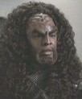

Kohlar |
|
|||||
|  |
Dati Personali
Genitori: Kolax, figlio di Amar e Talij, figlia di K'Rene
Nel 2377 è il capitano di un
incrociatore di classe D7 che, per generazioni, ha viaggiato nel
quadrante Delta alla ricerca del Kuvah'Magh, il salvatore. Pensa
di averlo trovato quando incontra la
Voyager nel
quadrante Delta e lo individua nella figlia che
B'Elanna porta in grembo.